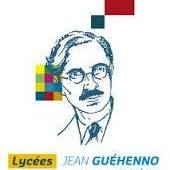
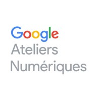

Mes expérience professionnelle
-
-
Assistant comptable et reponsable informatique
Depuis 2021 | CACB Immobilier (21)
Saisie de facture et rapprochement comptable, gestion et maintenance du park informatique.
-
Comptable Gestion Locative
2020 - 2021 | CACB Immobilier (21)
Saisie de facture, affectation des encaissements, rapprochement bancaire.
-
Assistant Admnistratif
2019 | TRANSDEV BFC EST (21)
Mise en place et création d'un outil de suivi de caisse, suivi du park auto
-
Mes formations et certifications
Formations:
-
-

BTS Comptabilité et Gestion
2017 - 2019 | Lycée Jean Guéhenno (35)
Enseignement fondamentaux en comptabilité générale, sociale et analytique. Initiation à la création d'algorithme VBA et à l'utilisation de base SQL.
-
BACCALAUREAT Economique et Social
2014 - 2017
Option: Science Sociale et Politique
-
Certifications:
-
-
Google Analytics pour les débutants
2021 | Google Analytics Academy
Initiation à l'utilisation de Google Analytics
-

Fondamentaux du marketing numérique
2021 | The Open University - Google Atelier Numérique
Initiation aux principes de bases en marketing numérique: Référencement SEO, SEA, ciblage d'audience, utilisation des réseaux sociaux...
-
Mes compétences
3 Soft Skills
- Grande aisance à l'informatique
- Capacité d'adaptation proche du tardigrade
- Créativitude
3 Hard Skills
- Logique Comptable
- Veille informationelle
- Analyse de données
Language
Logiciels
- Virtual Studio Code
- Inkscape
- Gimp
- Excel
- Ableton
A propos de moi
Bonjour à vous et bienvenue sur ce site web. Je me présente, Kilian DUCLOS, et j'ai ans. Après une première expérience sur un poste mélant comptabilité et informatique, c'est une nouvelle page que je souhaite ouvrir dans ma vie professionnelle.
C'est sur le monde du développement web que c'est jeté mon dévolu. Un monde qui me paraissait innacessible, mais que j'arrive désormais à toucher du bout des doigts. Mes connaissances sur le domaine sont encore à leurs balbutiements, et le chemin à parcourir est encore long. Pour y palier, j'essaie de me démarquer avec mes capacités d'adaptation et d'apprentissage, mon aisance avec l'informatique en général, ainsi qu'une pincée de curiosité et de créativité.
Pour parcourir ce chemin, je souhaite me former en alternance, et pour ça j'ai besoin de vous! Et je serais plus qu'enchanté de rejoindre votre équipe afin de vous montrer de quoi je suis capable.
Passions
- Skateboard
- Zythologie
- TTRPG